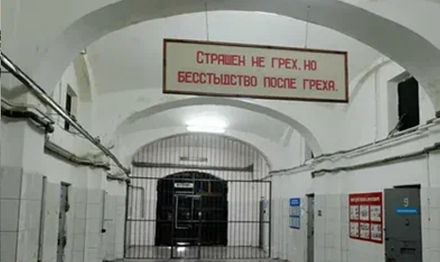

Общая характеристика экологических преступлений
Преступления против окружающей среды и экологической безопасности предусмотрены главой 26 УК РФ (ст. 246–262).
Видовым объектом данной категории преступлений являются общественные отношения, связанные с рациональным использованием природных ресурсов, охраной животного и растительного мира, обеспечением экологической безопасности граждан. Непосредственный объект определен включает конкретно отношения по охране окружающей среды; рациональное использованию природных богатств; обеспечение экологической безопасности. Предметом экологических преступлений являются конкретные природные ресурсы (земля, воздух, вода, животный мир, растительный мир и т.д.).
По конструкции объективной стороны большинство экологических преступлений относится к категории материальных составов, т.е. должны быть установлены нарушения соответствующих правил, предусмотренные диспозицией последствия и причинная связь, например, ст. 250 УК РФ — загрязнение вод, ст. 251 УК РФ — загрязнение атмосферы и др. Некоторые составы сконструированы по типу формальных, например, нарушение законодательства о континентальном шельфе — ст. 253 УК РФ.
Субъективная сторона в основном характеризуется умышленной формой вины (в квалификационных составах, предполагающих наступление особо опасных последствий, возможна также неосторожность).
Субъект экологических преступлений — это физическое вменяемое лицо, достигшее 16-летнего возраста. В ряде составов предусмотрен специальный субъект.
В зависимости от непосредственного объекта экологические преступления можно разделить на две группы - преступления в сфере обеспечения экологической безопасности и здоровья населения и преступления, наносящие ущерб растительному и животному миру при осуществлении хозяйственной деятельности.
Преступления в сфере обеспечения экологической безопасности и здоровья населения
1) Ст. 246 — нарушение правил охраны окружающей среды при производстве работ (проектировании, размещении, строительстве, вводе в эксплуатацию и эксплуатации промышленных, сельскохозяйственных, научных и иных объектов). Преступные последствия данного деяния возможны в форме существенного изменения радиоактивного фона; причинения вреда здоровью человека (средней тяжести, легкого); массовой гибели животных; иных тяжких последствий (крупных аварий, причинения существенного вреда отдельным звеньям окружающей природной среды). Субъективная сторона преступления характеризуется только умыслом. Субъект преступления специальный — лицо, ответственное за соблюдение правил охраны окружающей среды на различных этапах производственной деятельности.
2) Ст. 247 — нарушение правил обращения экологически опасных веществ и отходов. Предмет преступления – запрещенные виды отходов производства (токсичных химических препаратов и т.д.) и радиоактивные, бактериологические, химические вещества и отходы. Деяние заключается в нарушении правил при производстве запрещенных видов опасных отходов, транспортировке, хранении, захоронении, использовании, ином обращении отмеченных выше отходов и веществ. Субъективная сторона характеризуется прямым умыслом, т.е. лицо осознает, что совершает деяние, создающее угрозу экологической безопасности, и желает его совершить. Субъект преступления специальный — лицо, на которое возложена обязанность соблюдения соответствующих правил обращения с экологически опасными веществами и отходами.
3) Ст. 248 — нарушение правил безопасности при обращении с микробиологическими агентами или токсинами.
4) Ст. 250 — загрязнение вод (засорение, истощение поверхностных или подземных вод, источников питьевого водоснабжения либо иное изменение их природных свойств, если эти деяния повлекли причинение существенного вреда животному или растительному миру, рыбным запасам, лесному или сельскому хозяйству, причинение вреда здоровью человека или массовую гибель животных).
5) Ст. 251 — загрязнение атмосферы (выброс в атмосферу загрязняющих веществ или нарушение эксплуатации установок, сооружений и иных объектов, если эти деяния повлекли загрязнение или иное изменение природных свойств воздуха, или по неосторожности причинение вреда здоровью человека.
6) Ст. 252 — загрязнение морской среды (вследствие нарушения правил захоронения или сброса с транспортных средств или возведенных в море искусственных островов, установок или сооружений веществ и материалов, вредных для здоровья человека и водных биологических ресурсов либо препятствующих правомерному использованию морской среды).
7) Ст. 253 — нарушение законодательства РФ о континентальном шельфе и об исключительной экономической зоне РФ (незаконные создание, эксплуатация, использование искусственных островов, установок и сооружений на континентальном шельфе, исследование, поиск, разведка, а также разработка, в том числе добыча (вылов), природных ресурсов континентального шельфа без соответствующего разрешения).
8) Ст. 254 — порча земли (отравление, загрязнение или иная порча земли вредными продуктами хозяйственной или иной деятельности вследствие нарушения правил обращения с удобрениями, стимуляторами роста растений, ядохимикатами и иными опасными химическими или биологическими веществами при их хранении, использовании и транспортировке, повлекшие причинение вреда здоровью человека или окружающей среде, или по неосторожности смерть человека);
9) Ст. 255 — нарушение правил охраны и использования недр (при проектировании, размещении, строительстве, вводе в эксплуатацию и эксплуатации горнодобывающих предприятий или подземных сооружений, не связанных с добычей полезных ископаемых; самовольная застройка площадей залегания полезных ископаемых, если эти деяния повлекли причинение значительного ущерба; самовольная добыча янтаря, нефрита или иных полудрагоценных камней лицом, подвергнутым административному наказанию за аналогичное деяние).
Преступления, наносящие ущерб растительному и животному миру при осуществлении хозяйственной деятельности
1) Ст. 249 — нарушение ветеринарных правил и правил, установленных для борьбы с болезнями и вредителями растений. Деяние заключается в нарушении требований по предупреждению и ликвидации болезней животных и обеспечению безопасности в ветеринарном отношении продуктов животноводства. Преступные последствия — это распространение эпизоотии (болезнь животных); иные тяжкие последствия (причинение существенного ущерба, заболевание людей и т.д.). Субъективную сторону преступления характеризует неосторожная форма вины. Субъект преступления — это лицо, которое должно обеспечивать или соблюдать ветеринарные правила.
- Ст. 256 — незаконная добыча водных животных и растений. Предмет — различные породы речных и морских рыб, животных (моржи, тюлени и т.д.), промысловые морские растения. Незаконной добыча является тогда, когда она совершена без лицензии; не тем лицом, которому выдана лицензия; в запретное время или в запрещенных местах; запрещенными орудиями лова. Преступлением незаконная добыча водных животных и растений становится в случаях причинения крупного ущерб; применения самоходного транспортного средства (катера, моторной лодки), взрывчатых или химических веществ, электротока либо иных способов массового истребления водных животных и растений; осуществления в местах нереста или на миграционных путях к ним; осуществления на территории заповедника, заказника либо в зоне экологического бедствия или в зоне чрезвычайной экологической ситуации. Субъективная сторона преступления характеризуется прямым умыслом. Субъект общий — физическое вменяемое лицо, достигшее 16 лет.
3) Ст. 257 — нарушение правил охраны рыбных запасов (сплав древесины, строительство мостов, дамб, транспортировка древесины и других лесных ресурсов, осуществление взрывных и иных работ, если эти деяния повлекли массовую гибель рыбы или других водных биологических ресурсов, уничтожение в значительных размерах кормовых запасов либо иные тяжкие последствия).
4) Ст. 258 — незаконная охота. Предмет преступления — дикие звери и птицы. Незаконной охота признается, если осуществляется без охотничьего билета, при отсутствии лицензии, в запрещенные сроки и т.д. Преступлением она становится в случаях причинения крупного ущерба; применения механического транспортного средства или воздушного судна (вертолета, планера), взрывчатых веществ, газов или иных способов массового уничтожения птиц и зверей; в отношении птиц и зверей, охота на которых полностью запрещена (белый медведь, уссурийский тигр, марал, все виды лебедей и др.); на территории заповедника, заказника либо в зоне экологического бедствия или в зоне чрезвычайной экологической ситуации.
5) Ст. 258.1. — незаконные добыча и оборот особо ценных диких животных и водных биологических ресурсов, принадлежащих к видам, занесенным в Красную книгу РФ и (или) охраняемым международными договорами РФ.
6) Ст. 259 — уничтожение критических местообитаний для организмов, занесенных в Красную книгу РФ.
7) Ст. 260 — незаконная рубка лесных насаждений. Предмет преступления — это различные виды деревьев и кустарников: это леса, выполняющие водоохранные, защитные, санитарно-гигиенические и оздоровительные функции; леса заповедников, национальных и природных парков; леса, имеющие научное и историческое значение; леса но в особо защитных участках; защитные лесополосы вдоль железных дорог, каналов, автомагистралей и т.д. Незаконной порубка будет в случае, если она осуществляется без соответствующего разрешения (лицензии, лесорубочного билета, ордера) или в большем количестве, или не тех пород деревьев, что указаны в разрешении. Обязательным признаком объективной стороны являются последствия — значительный размер ущерба, исчисляемый по установленным таксам и в двадцать раз превышающий пять тысяч рублей. Субъективную сторону характеризует прямой умысел. Субъект общий — физическое вменяемое лицо, достигшее 16 лет.
8) Ст. 261 — уничтожение или повреждение лесных насаждений (в результате неосторожного обращения с огнем или иными источниками повышенной опасности, если эти деяния причинили значительный ущерб (более десяти тысяч рублей); умышленного поджога иным общеопасным способом либо в результате загрязнения или иного негативного воздействия).
9) Ст. 262 — нарушение режима особо охраняемых природных территорий и природных объектов (заповедников, заказников, национальных парков, памятников природы и других особо охраняемых государством природных территорий; при условии причинения значительного ущерба).